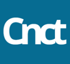
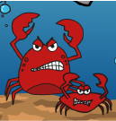

Projects
Here are some examples of some of my past work, to give you an idea of what i'm capable of making.
These examples are all from my time at UCL. I am still improving my work from day to day, since i work
on things like these all the time.
Project 1 - Dating App
 For this project we were spread out into group that then had to develop a concept
for at dating app. We had to find out target group for this daiting app, so it
would make it easier for us to design a good app. We chose to work with people in
the age group from 18-25 years old. This target group was selected since we were in
this group and there for knew a bit more about what should be in a app of this caliber
and on top of that, we felt that there weren't any good aps out there for the things we
were looking for. The idea of this app would be to connect people who has the same intrest
that way you would have somthing in common, which would help with having a topic to
start of with, and then work from there. We also made this app not only for daiting
but also just to make connections between people, so you can use the app to find friends as well
Project 2 - Redesign Of Website
In project 2, we were once again spread into groups to work togehter on finding a
website that we felt could use a makeover, to make it more relevent and better looking
I made the decion to start looking at hobby website in Odense, since they rarely have
an updated website, it is mostly there to have some information on it. We found a website
for Odense Model Train, which was in a big need of an update, so we called our target group
to hear what they would want on their website what they felt was missing. After we talked to
one of the members we had a good idea of what to work on. We made an updated website in Adobe XD
so they could see what our idea for the website was, we also used that Adobe XD file to show to the
class and talk about our thougt process.
Project 3 - Smack A Crab
This report follows the focus points and overall mission of Økolariet experience and science center.
Their primary objective is to educate guests about environmental changes, sustainability and climate change.
Mostly relating to the localised surrounding areas of Vejle Fjord. To further knowledge and insight
the experience and science center uses installations to convey information in a fun and engaging way.
Through research and analyzing the ecosystem in Vejle Fjord, this report will focus on designing
an interactive media which will showcase one of the primary challenges of the ecosystem,
and how to improve it.
Crabs has become a main trouble, with a heavy overpopulation and has skewed the balance in the
relating links of the ecosystem. Therefore some kind of implementation must take place to hold down the
populace and our interactive solution will explain the main benefits and reasons behind it. The solution
aims to engage a younger audience to have fun while learning and have parents (or teachers) explain
in detail the challenges behind the overpopulation of crabs in Vejle Fjord. Even down to a level of how it
affects your everyday life.
B-Roll
For this project we had to learn about using Adobe Premiere, we had to make
A B-roll of something we do in our everyday life, so I made a video of me
making something to drink. In this video I'm making a preworkout drink
So something with caffine that help me with work.